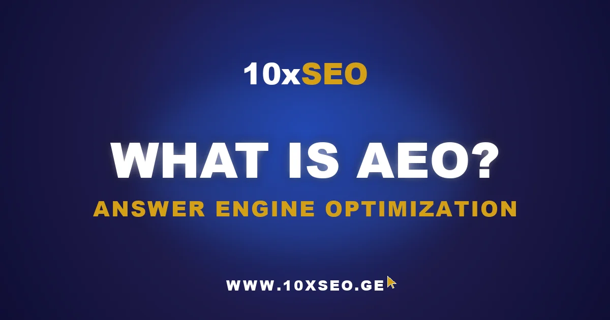

The digital marketing landscape is shifting — and faster than most businesses realize. Users no longer scan a list of blue links. They ask a question and receive a single, synthesized AI-generated answer. That answer comes from Large Language Models that choose some sources to cite and ignore the rest.
So what is AEO? Answer Engine Optimization (AEO) is the practice of structuring your content so that AI platforms — ChatGPT, Perplexity, Microsoft Copilot, Gemini, and Google AI Overviews — recognize it as trustworthy and include it in their generated responses. If traditional SEO was about ranking in a list, AEO is about becoming the answer itself.
This guide explains what AEO is, why it matters for every marketer, how it differs from SEO, and the concrete steps to implement it — whether you're a business owner, marketing lead, or SEO professional.
What Is Answer Engine Optimization (AEO)?
Answer Engine Optimization (AEO) is the discipline of making your content the source that AI-powered answer engines cite when generating a response to a user's query. The platforms in scope today include ChatGPT, Perplexity AI, Microsoft Copilot, Google AI Overviews, and Gemini.
Where traditional SEO targets a ranked position in a results list, AEO targets inclusion in a synthesized answer. The mechanics are meaningfully different: instead of optimizing for crawl signals and link authority alone, you optimize for how a language model extracts, weighs, and attributes information to produce a coherent response.
A page that ranks #1 on Google can still be completely invisible inside ChatGPT. AEO closes that gap.
The fundamental principle of AEO is that modern AI technology doesn't just retrieve information — it analyzes, synthesizes, and presents it as a cohesive answer, drawing from multiple sources. That means the quality and structure of your content is decisive, not just its position in a traditional ranking.
The New Reality: How AI Is Reshaping Search Behavior
Modern users search differently. They are no longer satisfied with a list of links — they expect specific, direct answers to their questions, and AI technology is designed exactly to meet that expectation. The growing popularity of voice assistants, the rapid adoption of ChatGPT, and the emergence of AI-first search platforms have fundamentally changed how people find information.
This shift is most visible in younger audiences. They are already accustomed to interacting with technology that answers questions, explains concepts, and helps solve problems conversationally. That means user expectations will only keep rising — and only content that genuinely satisfies those expectations will succeed.
AEO is still a new concept in Georgia, but its importance is growing fast. Georgian businesses that recognize this trend early will gain a significant competitive advantage — AI-powered search doesn't distinguish between languages, and the optimization principles apply equally to any well-structured, authoritative content.
Effective AEO also requires deep analysis of user intent — not just what keywords someone types, but what problem they are trying to solve, what information format serves them best, and what context they are in when they ask. User intent has three layers: surface (what are they searching?), deep (why are they searching?), and contextual (how will they use this information?). AEO content must address all three.
Structure and Depth: Why Both Matter for AEO
Content structure is especially important for AEO. AI systems process and understand content that is logically organized far more effectively than walls of text. Clear headings, short paragraphs, and well-defined sections help the model extract and attribute specific spans of text when composing its answer.
Good AEO content structure is hierarchical: the main idea must be stated clearly at the very beginning, followed by supporting ideas, concrete examples, and conclusions. This doesn't mean content should be simplified — quite the opposite. It should be deep and substantive, but organized so that structure and depth reinforce each other rather than compete.
Answer engines reward two properties simultaneously: extractable structure (clear H2/H3 headings, short definitional sentences, lists, tables) and topical depth (enough surrounding context that the model trusts the source). Pages with structure but no depth feel shallow and rarely become primary cited sources. Pages with depth but no structure get skipped because the model can't cleanly extract a quotable span.
Key structural best practices for AEO:
- Definitional opening: answer the page's main question directly in the first 50–80 words — this is the span most likely to be extracted.
- Question-phrased headings: H2/H3 written as the actual questions users ask, not generic keyword phrases.
- Concise paragraphs: 2–4 sentences per paragraph, one central idea each.
- Schema markup: Article, FAQPage, and HowTo where structurally appropriate — do not force schema onto pages that don't need it.
- First-party data: original statistics, case studies, and examples that AI models cannot retrieve from other sources.
The use of Schema markup in AEO goes beyond technical tags — it is semantic labeling. By marking whether your content contains facts, opinions, instructions, or examples, you help AI systems generate more precise and relevant responses. Structured data signals context; context earns citation.
Voice Search and Conversational AEO
One of the most important dimensions of AEO is optimizing for voice and conversational queries. People speak to voice assistants differently than they type: instead of "SEO optimization Tbilisi," a voice query sounds like "Where can I find a good SEO specialist in Tbilisi?"
This shift matters because voice queries are structurally more complex. Users specify context, add qualifiers, and ask multi-part questions. AEO content written in plain, natural language with question-based headings aligns organically with how voice queries work.
A practical audit: review your best-performing pages and check whether the H2/H3 headings are phrased as questions a real person would ask out loud. "AEO Strategy" is a keyword target. "How do I build an AEO strategy for my business?" is a voice-native query — and far more likely to be matched and cited by an AI engine.
This is especially relevant for the Georgian language, which is morphologically and syntactically complex. AI systems need well-structured Georgian content to generate accurate answers — meaning AEO in Georgia requires not just content quality but linguistic precision.
Not sure if AI engines are citing your brand?
Get a free 72-hour audit — we'll map which AI engines cite your competitors and show you exactly where the gaps are in your AI visibility.
Measuring AEO Results: A Multi-Metric Approach
Measuring AEO effectiveness differs from traditional SEO. You need to track far more than rank and CTR. The most important AEO metrics fall into three categories:
- Visibility metrics: how frequently your content appears in AI-generated answers for your target queries — tracked manually through prompt audits or with tools like Ahrefs Brand Radar.
- Engagement metrics: how users interact with your content when they arrive via an AI platform referral — session depth, conversion rate, and return visits signal whether AI-driven traffic is genuinely valuable.
- Authority metrics: how often AI systems treat your domain as the primary or most-cited source within your topic cluster — a proxy for topical authority in the AI layer.
Classic Google Analytics only tells part of the story under AEO. Referral traffic from ChatGPT and Perplexity now appears as direct or referral traffic with recognizable source URLs. Setting up UTM-aware tracking and monitoring AI-platform referrers directly in your analytics gives you a cleaner picture of AEO-driven growth.
It is also worth tracking Featured Snippet ownership for your top queries, since Featured Snippets remain one of the primary data sources for AI training and citation selection.
Building an AEO Strategy
A successful AEO strategy requires a structured, multi-stage approach. Start with a deep analysis of your audience and their actual questions — not just keywords, but the real problems they are trying to solve, the format in which they want answers, and the context in which they will use that information.
The second stage is competitive analysis: who are your main competitors in the AEO space? What type of content are they producing? Which prompts do they dominate inside AI engines? This analysis helps you identify where you have a genuine content advantage and where the opportunity to differentiate is greatest.
The third stage is content strategy: which content types will be most effective for your goals? How should content be structured to maximize AI extractability? How frequently should it be updated to reflect the latest developments in your field?
From there, the work is content engineering: restructure pages around the prompts you want to win, layer in original data and first-person expertise, and make every key claim explicit enough that a language model can extract it as a standalone, quotable statement.
Integrating AEO into Your Overall SEO Plan
AEO is not a replacement for SEO — it is a complement. Successful digital marketing strategy incorporates both. Traditional SEO remains essential for Google visibility; AEO drives visibility through the AI platforms that are rapidly becoming the first touchpoint for information-seeking users.
Integration means your AEO strategy must be synchronized with your broader marketing objectives. If the goal is brand awareness, AEO should focus on queries related to your category and expertise. If the goal is direct lead generation, AEO should target the high-intent questions that precede a purchase decision.
In practice, treat every new article as a dual-purpose asset: it must rank in Google's traditional SERP and be quotable inside an answer engine. A single QA workflow that checks pages against both scorecards — traditional on-page SEO (title, meta, internal linking, technical health) and AEO readiness (definitional opening, structured headings, schema, original data) — is the most efficient way to run both tracks at once.
Practical Next Steps for AEO
AEO in Georgia is becoming a key marketing discipline — faster than most brands expect. Businesses that recognize this trend early and begin implementing AEO principles now will gain a compounding competitive advantage as AI-first search adoption continues to grow.
If you're new to AEO, the highest-ROI first move is auditing your existing top pages — the ones already ranking on Google — and rewriting their openings as direct, extractable answers to the main query. That single change typically lifts citation rates inside ChatGPT and Perplexity within 2–4 weeks.
The good news: you don't have to navigate this alone. 10xSEO's AI SEO service handles AEO and GEO end-to-end — from prompt research and citation auditing to content engineering and ongoing tracking. Our existing partners are already seeing the results of AI-first visibility in practice.
Ready to close the gap between your Google rankings and your AI search visibility? Book a free consultation and find out exactly where you stand.
Frequently Asked Questions About AEO
What is Answer Engine Optimization (AEO)?
Answer Engine Optimization (AEO) is the practice of structuring and writing content so that AI-powered answer engines — including ChatGPT, Gemini, Perplexity, and Google AI Overviews — recognize it as a trustworthy source and quote it in their generated responses. Unlike traditional SEO, which targets a ranked position in a list of links, AEO targets inclusion in a synthesized, conversational answer.
How is AEO different from SEO?
SEO optimizes pages for traditional ranked search results — the goal is appearing in the top blue links. AEO optimizes for inclusion in AI-generated answers. Both disciplines share underlying signals (quality content, authority, structure), but the optimization target differs: a ranked link versus a cited source. In practice, AEO content is more definitional, opens with a direct answer, and is structured around the questions users actually ask.
Does AEO replace SEO?
No. AEO complements SEO; it doesn't replace it. Most users still discover brands through traditional search before they query an AI engine. SEO drives the discovery layer; AEO ensures visibility once users shift to conversational AI. Businesses that abandon SEO to chase AEO typically lose more organic traffic than they gain in AI citations. Run both tracks in parallel.
How do I measure AEO results?
Track citation share (how often your domain appears in AI answers for target queries), brand prompt mentions, referral traffic from AI engine URLs, and assisted conversions from AI-driven visits. Classic analytics only partially captures this picture — manual prompt audits and tools like Ahrefs Brand Radar provide the most reliable AEO visibility data today.
How quickly does AEO show results?
Faster than traditional SEO in many cases. Rewriting the opening 80 words of an existing top-ranking page can change citation behavior within 2–4 weeks. Building AI citation authority for a brand-new domain still takes 3–6 months, similar to traditional ranking timelines. The highest-ROI starting point is optimizing pages that already rank on Google — they are most likely already in answer engines' data.
Ready to Be First in AI Search?
Talk to 10xSEO about your AEO and SEO strategy. Free 15-minute consultation — no commitment.
Book Free Consultation